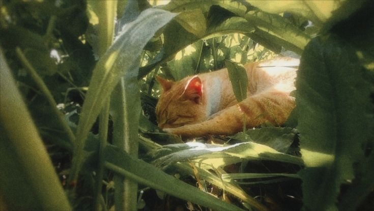

Kucing dapat mengalami berbagai penyakit seperti flu kucing, infeksi kulit, kutu, hingga gangguan pencernaan. Penyakit ini biasanya ditandai dengan gejala seperti lesu, nafsu makan menurun, atau perubahan pada bulu dan mata.
Kebersihan lingkungan dan makanan sangat berpengaruh terhadap kesehatan kucing. Kucing yang dirawat dengan baik biasanya lebih jarang terkena penyakit.
Jika kucing menunjukkan gejala sakit, sebaiknya segera dibawa ke dokter hewan agar mendapatkan penanganan yang tepat.